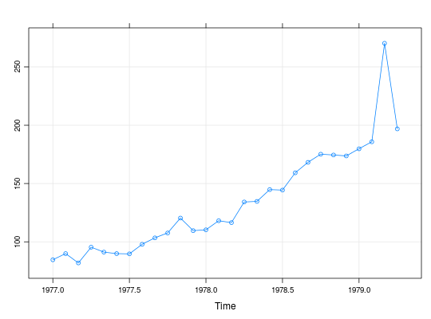
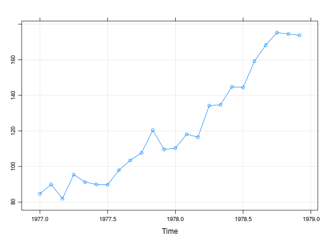
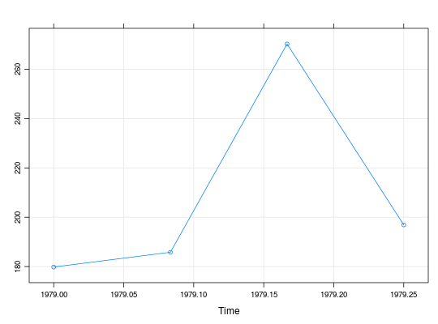

Dados sobre o consumo de energia elétrica no Espírito Santo, de Janeiro de 1977 a Dezembro de 1978, arredondados.
Uma série temporal (classe ts) com 24 observações
mensais, de 1977 a 1978.
Morettin, P. A., Toloi, C. M. C. (2006). Análise de Séries Temporais (2nd ed.). São Paulo, SP: Editora Egard Blucher. (Tabela 3.1, pág. 49; tabela 3.2, pág. 51; tabela 3.3, pág. 54; tabela 3.4 pág. 63)
data(MorettinTb3.1) str(MorettinTb3.1)#> Time-Series [1:28] from 1977 to 1979: 84.6 89.9 81.9 95.4 91.2 ...library(lattice) # Série completa MorettinTb3.1#> Jan Feb Mar Apr May Jun Jul Aug Sep Oct Nov Dec #> 1977 84.6 89.9 81.9 95.4 91.2 89.9 89.7 97.9 103.4 107.6 120.4 109.6 #> 1978 110.3 118.1 116.5 134.2 134.7 144.8 144.4 159.2 168.2 175.2 174.5 173.7 #> 1979 179.8 185.8 270.3 196.9summary(MorettinTb3.1)#> Min. 1st Qu. Median Mean 3rd Qu. Max. #> 81.90 97.28 119.20 133.90 169.60 270.30xyplot(MorettinTb3.1, type = c("o", "g"))# Apenas os dados da tabela 3.1 e 3.3 (da <- window(MorettinTb3.1, end = c(1978, 12)))#> Jan Feb Mar Apr May Jun Jul Aug Sep Oct Nov Dec #> 1977 84.6 89.9 81.9 95.4 91.2 89.9 89.7 97.9 103.4 107.6 120.4 109.6 #> 1978 110.3 118.1 116.5 134.2 134.7 144.8 144.4 159.2 168.2 175.2 174.5 173.7summary(da)#> Min. 1st Qu. Median Mean 3rd Qu. Max. #> 81.90 94.35 113.40 121.50 144.50 175.20xyplot(da, type = c("o", "g"))# Apenas os dados da tabela 3.2 (da <- window(MorettinTb3.1, start = c(1979, 1)))#> Jan Feb Mar Apr #> 1979 179.8 185.8 270.3 196.9summary(da)#> Min. 1st Qu. Median Mean 3rd Qu. Max. #> 179.8 184.3 191.4 208.2 215.2 270.3xyplot(da, type = c("o", "g"))